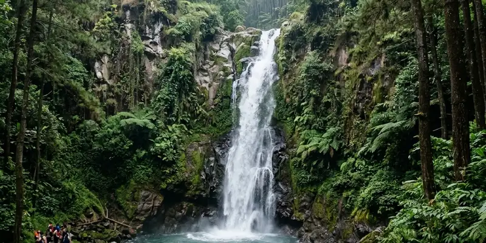

Offroad Coban Talun adalah petualangan jeep 4x4 yang menyusuri jalur hutan pinus, sungai, dan perkebunan di kawasan Bumiaji, Kota Batu, sekaligus dapat digabungkan dalam satu paket kunjungan dengan air terjun Coban Talun.
Ringkasan Inti
- Coban Talun berlokasi di Dusun Wonorejo, Desa Tulungrejo, Kecamatan Bumiaji, Kota Batu, sekitar 20 menit dari Alun-alun Kota Batu.
- Offroad di kawasan ini menggunakan jeep 4x4 jenis Taft atau Jimny dengan kapasitas umumnya maksimal 3 penumpang per unit.
- Tersedia pilihan trek pendek sekitar 2-3 jam dan trek panjang sekitar 3-4 jam sesuai preferensi peserta.
- Air terjun Coban Talun sendiri memiliki ketinggian yang disebutkan bervariasi antara sekitar 50 hingga 75 meter tergantung sumber.
- Selain offroad dan air terjun, kawasan ini juga menawarkan aktivitas tambahan seperti outbound, rafting, paintball, dan camping.
Apa Itu Offroad Coban Talun dan Di Mana Lokasinya?
Offroad Coban Talun adalah aktivitas wisata petualangan menggunakan mobil jeep 4x4 yang menyusuri medan hutan pinus, sungai kecil, dan perkebunan sayur di kawasan wisata Coban Talun, Kota Batu.
Lokasi Coban Talun berada di Dusun Wonorejo, Desa Tulungrejo, Kecamatan Bumiaji, Kota Batu, Jawa Timur, dengan waktu tempuh sekitar 20 menit dari Alun-alun Kota Batu. Kawasan ini awalnya dikenal luas karena air terjunnya yang berada di tengah hutan pinus, namun kini berkembang menjadi destinasi yang lebih beragam dengan hadirnya aktivitas jeep offroad, spot foto, hingga fasilitas glamping. Akses jalan menuju lokasi umumnya sudah beraspal dan dapat dilalui kendaraan roda dua maupun roda empat, meski beberapa titik menjelang area hutan cukup menanjak dan sempit.
Bagaimana Jalur dan Pengalaman Offroad di Kawasan Coban Talun?
Jalur offroad di kawasan Coban Talun melintasi hutan pinus, aliran sungai kecil, dan area perkebunan sayur dengan kontur tanah yang terjal dan berbatu, menghadirkan pengalaman berkendara yang menantang sekaligus memacu adrenalin.
Peserta offroad biasanya menggunakan jeep jenis Taft atau Jimny 4x4 dengan kapasitas penumpang yang umumnya dibatasi maksimal tiga orang per unit demi menjaga kenyamanan dan keselamatan selama perjalanan. Penyelenggara biasanya menyediakan dua pilihan durasi, yaitu trek pendek dengan estimasi waktu sekitar 2 hingga 3 jam, serta trek panjang yang memakan waktu sekitar 3 hingga 4 jam bagi peserta yang menginginkan pengalaman lebih menyeluruh menjelajahi kawasan ini. Sesi offroad umumnya tersedia setiap hari dengan waktu mulai yang dapat disesuaikan berdasarkan pemesanan sebelumnya, meski banyak penyelenggara menyarankan memulai perjalanan di pagi hari untuk pengalaman yang lebih optimal.

Air terjun Coban Talun dengan aliran air yang menakjubkan di tengah hutan pinus.
Apa Daya Tarik Air Terjun Coban Talun Selain Aktivitas Offroad?
Daya tarik air terjun Coban Talun selain aktivitas offroad meliputi keindahan aliran air yang dikelilingi hutan pinus serta formasi bebatuan alami yang terbentuk dari aktivitas gunung berapi di masa lalu.
Beberapa sumber menyebutkan ketinggian air terjun ini berkisar antara 50 hingga 60 meter, sementara sumber lain menyebutkan angka yang lebih tinggi sekitar 75 meter, sehingga terdapat variasi penyebutan tergantung referensi yang digunakan. Di bagian bawah air terjun umumnya terbentuk kolam dangkal yang relatif aman digunakan untuk bermain air, meski wisatawan tetap disarankan berhati-hati mengingat kondisi arus dapat berubah tergantung curah hujan. Untuk mencapai lokasi air terjun, pengunjung umumnya perlu berjalan kaki dari area parkir melalui jalur setapak di tengah hutan pinus yang menyejukkan.
Apa Saja Aktivitas Lain yang Bisa Digabung dengan Offroad di Coban Talun?
Aktivitas lain yang bisa digabung dengan offroad di Coban Talun antara lain kegiatan outbound, rafting menyusuri sungai, bermain paintball, berfoto di spot kekinian, serta camping atau glamping di kawasan hutan pinus.
Berikut beberapa aktivitas tambahan yang umum ditemukan di kawasan ini:
- Outbound kelompok — Cocok bagi rombongan instansi atau komunitas yang ingin menggabungkan offroad dengan kegiatan permainan tim.
- Rafting sungai kecil — Menjadi pilihan tambahan bagi wisatawan yang menyukai aktivitas air selain menikmati air terjun.
- Paintball — Tersedia sebagai aktivitas seru tambahan yang dapat dinikmati bersama rombongan setelah sesi offroad.
- Spot foto kekinian — Termasuk area kebun bunga dan rumah unik bertema yang menjadi favorit untuk dokumentasi.
- Camping dan glamping — Fasilitas seperti Apache Camp dan Pagupon Camp menawarkan pengalaman menginap di tengah suasana hutan pinus yang sejuk.
Bagaimana Cara Menyusun Itinerary Satu Paket Offroad dan Wisata Air Terjun?
Cara menyusun itinerary satu paket offroad dan wisata air terjun di Coban Talun adalah dengan memulai perjalanan offroad pada pagi hari, kemudian melanjutkan kunjungan ke air terjun dan aktivitas tambahan lain di siang hingga sore hari.
Wisatawan yang ingin memaksimalkan kunjungan disarankan memulai dengan sesi offroad terlebih dahulu, mengingat aktivitas ini disarankan dilakukan di pagi hari saat kondisi tubuh masih segar dan cuaca belum terlalu terik. Setelah sesi offroad selesai, wisatawan dapat melanjutkan perjalanan menuju air terjun Coban Talun untuk menikmati suasana sejuk hutan pinus, dilanjutkan dengan aktivitas tambahan seperti berfoto di spot kekinian atau menikmati waktu santai di area camping sebelum mengakhiri kunjungan.
Apa yang Perlu Dipersiapkan Sebelum Ikut Offroad di Coban Talun?
Yang perlu dipersiapkan sebelum ikut offroad di Coban Talun meliputi pakaian yang nyaman, alas kaki tertutup, serta kesiapan fisik mengingat medan yang dilalui cukup terjal dan bergelombang.
Beberapa persiapan yang disarankan:
- Pakaian yang mudah bergerak — Hindari pakaian terlalu ketat yang dapat mengganggu kenyamanan selama guncangan di dalam jeep.
- Alas kaki tertutup — Sepatu tertutup lebih disarankan dibandingkan sandal terbuka mengingat medan berlumpur dan berbatu yang akan dilalui.
- Kondisi fisik yang memadai — Guncangan selama perjalanan offroad cukup intens, sehingga peserta dengan kondisi kesehatan tertentu sebaiknya berkonsultasi terlebih dahulu dengan penyelenggara.
- Perlengkapan tambahan — Membawa jaket ringan disarankan mengingat suhu di kawasan hutan pinus Bumiaji cenderung sejuk, terutama pada pagi hari.
Apa Kesalahan Umum Saat Merencanakan Kunjungan ke Coban Talun?
Kesalahan umum saat merencanakan kunjungan ke Coban Talun adalah tidak memesan sesi offroad terlebih dahulu, datang terlalu siang sehingga melewatkan waktu terbaik berkendara, serta tidak mempersiapkan kondisi fisik untuk medan yang cukup menantang.
Beberapa kesalahan yang sering terjadi:
- Datang tanpa reservasi terlebih dahulu, padahal sesi offroad umumnya berdasarkan pemesanan sebelumnya agar jadwal dan jumlah jeep dapat disiapkan penyelenggara.
- Berkunjung terlalu siang, sehingga kehilangan kesempatan menikmati suasana pagi yang lebih disarankan untuk sesi offroad.
- Tidak membawa pakaian ganti, padahal aktivitas seperti offroad dan bermain air di kolam bawah air terjun berpotensi membuat pakaian basah atau kotor.
- Mengabaikan kondisi cuaca, padahal musim hujan dapat memengaruhi kondisi jalur offroad maupun debit air terjun.
Kesimpulan
Offroad Coban Talun menawarkan pengalaman petualangan jeep 4x4 yang dapat digabungkan dalam satu paket kunjungan dengan keindahan air terjun dan berbagai aktivitas tambahan seperti outbound, rafting, dan camping. Merencanakan kunjungan dengan memulai sesi offroad di pagi hari serta mempersiapkan pakaian dan kondisi fisik yang sesuai membantu pengalaman wisata di kawasan ini berjalan lebih maksimal.
FAQ
Secara umum aman selama mengikuti arahan pengemudi jeep dan penyelenggara, karena kendaraan biasanya dikemudikan oleh pengemudi berpengalaman yang memahami kondisi jalur.
Kapasitas umumnya dibatasi maksimal tiga orang per unit jeep, meski hal ini dapat bervariasi tergantung penyelenggara dan jenis jeep yang digunakan.
Bisa, karena wisatawan tetap dapat mengunjungi air terjun Coban Talun secara terpisah tanpa harus mengikuti sesi offroad jeep.
Pagi hari umumnya menjadi waktu yang disarankan, mengingat kondisi cuaca yang lebih sejuk dan segar dibandingkan siang hari.
Disarankan melakukan reservasi terlebih dahulu, karena sesi offroad umumnya dijadwalkan berdasarkan pemesanan sebelumnya oleh penyelenggara.